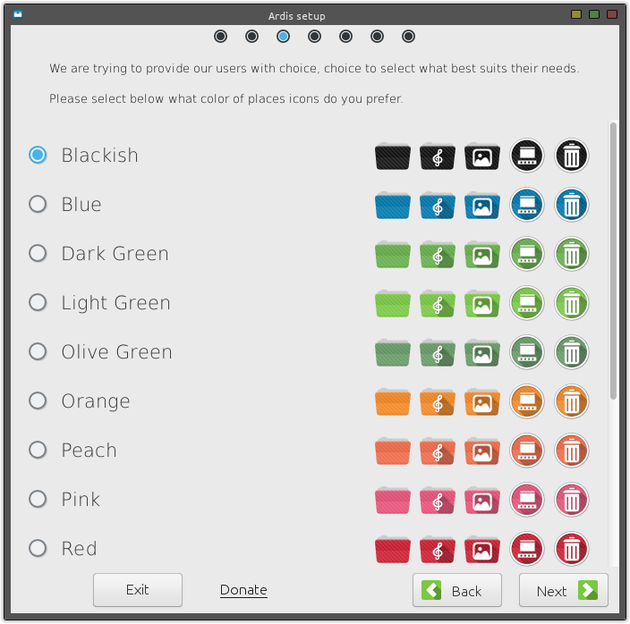

Ardis-BuilderHome
Official setup and customization wizard for the Ardis Icon Theme
Artwork by Kotusworks | Code by iJunkie22
GitHub - https://github.com/iJunkie22/Ardis-Builder
deviantART - http://kotusworks.deviantart.com/art/Ardis-Icon-Theme-450178304
Trello - https://trello.com/b/Rkn5p8kQ/ardis
Check if ArdisBuilder is confirmed to work with your setup:
| Basic | Plus | Mega | |
|---|---|---|---|
| Actions | 2 | 3 | 5 |
| Apps | All | ? | ? |
| Places | 3 | 5 | 9 |
| Status | |||
| Price | FREE | TBD | TBD |
